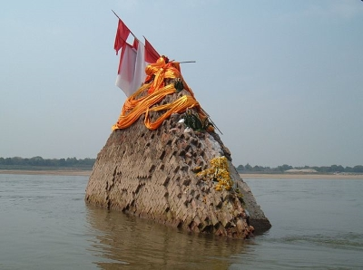

Nong Khai
By Pitt - Own work, CC BY-SA 3.0, Link
Nong Khai is right next to the river dividing Thailand from Laos. In the background of this picture you can see the shoreline of Laos.
By Pitt - Own work, CC BY-SA 3.0, Link
Nong Khai is right next to the river dividing Thailand from Laos. In the background of this picture you can see the shoreline of Laos.